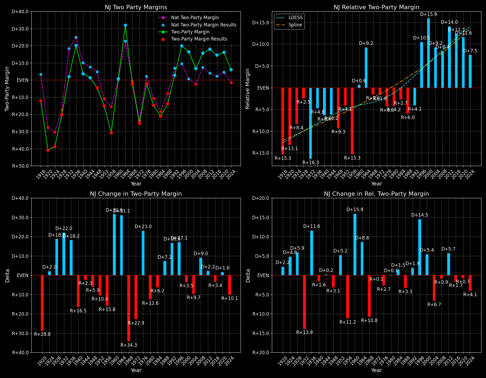

New Jersey (NJ) — Statewide

Margins · 3rd-Party share · Pres. deltas

Relative margins · Relative 3rd-Party · Rel. deltas
New Jersey (NJ) — Total Data
| Year | EVs | D | R | State Margin | Nat. Margin | Rel. Margin | Total votes |
|---|---|---|---|---|---|---|---|
| 1968 | 17 | 1,263,896(44.3%) | 1,325,130(46.5%) | R+2.1 | R+0.6 | R+1.6 | 2,851,191 |
| 1972 | 17 | 1,092,788(37.3%) | 1,835,319(62.7%) | R+25.4 (Δ R+23.2) | R+23.5 (Δ R+23.0) | R+1.8 (Δ R+0.3) | 2,928,107 |
| 1976 | 17 | 1,444,793(48.9%) | 1,509,501(51.1%) | R+2.2 (Δ D+23.2) | D+2.2 (Δ D+25.7) | R+4.4 (Δ R+2.6) | 2,954,294 |
| 1980 | 17 | 1,148,060(39.2%) | 1,547,201(52.8%) | R+13.6 (Δ R+11.4) | R+9.9 (Δ R+12.1) | R+3.7 (Δ D+0.7) | 2,929,904 |
| 1984 | 16 | 1,260,798(39.5%) | 1,932,727(60.5%) | R+21.0 (Δ R+7.4) | R+18.1 (Δ R+8.2) | R+2.9 (Δ D+0.8) | 3,193,525 |
| 1988 | 16 | 1,320,716(43.0%) | 1,743,175(56.8%) | R+13.8 (Δ D+7.3) | R+7.7 (Δ D+10.4) | R+6.0 (Δ R+3.1) | 3,071,253 |
| 1992 | 15 | 1,436,206(43.3%) | 1,356,865(40.9%) | D+2.4 (Δ D+16.1) | D+5.6 (Δ D+13.3) | R+3.2 (Δ D+2.8) | 3,314,900 |
| 1996 | 15 | 1,651,019(53.8%) | 1,102,577(35.9%) | D+17.9 (Δ D+15.5) | D+8.6 (Δ D+3.0) | D+9.3 (Δ D+12.5) | 3,069,320 |
| 2000 | 15 | 1,775,484(56.2%) | 1,276,474(40.4%) | D+15.8 (Δ R+2.1) | D+0.5 (Δ R+8.0) | D+15.3 (Δ D+6.0) | 3,158,828 |
| 2004 | 15 | 1,911,768(53.3%) | 1,670,107(46.6%) | D+6.7 (Δ R+9.1) | R+2.5 (Δ R+3.0) | D+9.2 (Δ R+6.1) | 3,586,922 |
| 2008 | 15 | 2,215,422(57.3%) | 1,613,207(41.7%) | D+15.6 (Δ D+8.8) | D+7.3 (Δ D+9.7) | D+8.3 (Δ R+0.9) | 3,868,254 |
| 2012 | 14 | 2,126,610(58.4%) | 1,478,750(40.6%) | D+17.8 (Δ D+2.2) | D+3.9 (Δ R+3.4) | D+13.9 (Δ D+5.6) | 3,642,933 |
| 2016 | 14 | 2,145,231(55.0%) | 1,600,005(41.0%) | D+14.0 (Δ R+3.8) | D+2.1 (Δ R+1.8) | D+11.9 (Δ R+2.0) | 3,901,543 |
| 2020 | 14 | 2,606,506(57.2%) | 1,881,067(41.3%) | D+15.9 (Δ D+1.9) | D+4.4 (Δ D+2.3) | D+11.5 (Δ R+0.4) | 4,559,953 |
| 2024 | 14 | 2,220,713(52.0%) | 1,968,215(46.1%) | D+5.9 (Δ R+10.0) | R+1.5 (Δ R+6.0) | D+7.5 (Δ R+4.0) | 4,272,725 |
Column explanations
- Δ
- Change (delta) in the value from the previous election year.
- Year
- Election year.
- EVs
- Number of electoral votes allocated to this state or unit.
- D
- Number of votes for the Democratic candidate (raw count(pct%)).
- R
- Number of votes for the Republican candidate (raw count(pct%)).
- State Margin
- Margin between the two major-party candidates, including third-party votes ((D - R)/total).
- Nat. Margin
- The national presidential margin for that year, including third-party votes ((D_total - R_total)/total_votes).
- Rel. Margin
- The presidential margin relative to the national presidential margin (Margin - Nat. Margin).
- Total votes
- Total voter turnout or ballots cast (when provided).
New Jersey (NJ) — Third-Party Data
| Year | Other votes | State 3rd-Party Share | 3rd-Party Nat. Share | 3rd-Party Rel. Share |
|---|---|---|---|---|
| 1968 | 262,165(9.2%) | 9.19% | 13.59% | -4.39% |
| 1972 | 0(0.0%) | 0.00% | 0.09% | -0.09% |
| 1976 | 0(0.0%) | 0.00% | 0.33% | -0.33% |
| 1980 | 234,643(8.0%) | 8.01% | 6.98% | 1.03% |
| 1984 | 0(0.0%) | 0.00% | 0.12% | -0.12% |
| 1988 | 7,362(0.2%) | 0.24% | 0.21% | 0.03% |
| 1992 | 521,829(15.7%) | 15.74% | 19.23% | -3.49% |
| 1996 | 315,724(10.3%) | 10.29% | 9.68% | 0.61% |
| 2000 | 106,870(3.4%) | 3.38% | 3.65% | -0.27% |
| 2004 | 5,047(0.1%) | 0.14% | 0.84% | -0.70% |
| 2008 | 39,625(1.0%) | 1.02% | 1.38% | -0.35% |
| 2012 | 37,573(1.0%) | 1.03% | 1.62% | -0.59% |
| 2016 | 156,307(4.0%) | 4.01% | 5.54% | -1.53% |
| 2020 | 72,380(1.6%) | 1.59% | 1.84% | -0.25% |
| 2024 | 83,797(2.0%) | 1.96% | 1.88% | 0.08% |
Column explanations
- Year
- Election year.
- Other votes
- Number of votes for third-party (other) candidates (raw count(pct%)).
- State 3rd-Party Share
- Share of the vote received by third-party (other) candidates.
- 3rd-Party Nat. Share
- The national third-party share for that year (3rd-Party votes / total votes).
- 3rd-Party Rel. Share
- Third-party share relative to the national third-party share (3rd-Party share - Nat. 3rd-Party share).

Two-party margins · relative · deltas
New Jersey (NJ) — Two-Party Data
| Year | 2-Party Margin | 2-Party Nat. Margin | 2-Party Rel. Margin |
|---|---|---|---|
| 1968 | R+2.4 | R+0.7 | R+1.7 |
| 1972 | R+25.4 (Δ R+23.0) | R+23.6 (Δ R+22.9) | R+1.8 (Δ R+0.1) |
| 1976 | R+2.2 (Δ D+23.2) | D+2.2 (Δ D+25.8) | R+4.4 (Δ R+2.6) |
| 1980 | R+14.8 (Δ R+12.6) | R+10.6 (Δ R+12.8) | R+4.2 (Δ D+0.2) |
| 1984 | R+21.0 (Δ R+6.2) | R+18.1 (Δ R+7.5) | R+2.9 (Δ D+1.3) |
| 1988 | R+13.8 (Δ D+7.3) | R+7.8 (Δ D+10.4) | R+6.0 (Δ R+3.1) |
| 1992 | D+2.8 (Δ D+16.6) | D+6.9 (Δ D+14.7) | R+4.1 (Δ D+2.0) |
| 1996 | D+19.9 (Δ D+17.1) | D+9.5 (Δ D+2.6) | D+10.4 (Δ D+14.5) |
| 2000 | D+16.4 (Δ R+3.6) | D+0.5 (Δ R+8.9) | D+15.8 (Δ D+5.4) |
| 2004 | D+6.7 (Δ R+9.6) | R+2.5 (Δ R+3.0) | D+9.2 (Δ R+6.6) |
| 2008 | D+15.7 (Δ D+9.0) | D+7.4 (Δ D+9.8) | D+8.4 (Δ R+0.9) |
| 2012 | D+18.0 (Δ D+2.2) | D+3.9 (Δ R+3.4) | D+14.0 (Δ D+5.7) |
| 2016 | D+14.6 (Δ R+3.4) | D+2.2 (Δ R+1.7) | D+12.3 (Δ R+1.7) |
| 2020 | D+16.2 (Δ D+1.6) | D+4.5 (Δ D+2.3) | D+11.6 (Δ R+0.7) |
| 2024 | D+6.0 (Δ R+10.1) | R+1.6 (Δ R+6.1) | D+7.6 (Δ R+4.0) |
Column explanations
- Δ
- Change (delta) in the value from the previous election year.
- Year
- Election year.
- 2-Party Margin
- Margin between the two major-party candidates, ignoring third-party votes ((D - R)/(D + R)).
- 2-Party Nat. Margin
- The national presidential margin for that year, including third-party votes ((D_total - R_total)/total_votes).
- 2-Party Rel. Margin
- The presidential margin relative to the national presidential margin (Margin - Nat. Margin).